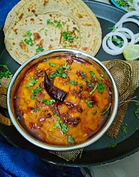

Dal Fry

Description
Dal Fry is a popular Indian dish made with lentils, known as "dal" in Hindi, which are cooked and then tempered with aromatic spices. It is a staple in Indian cuisine and is commonly found in both homes and restaurants.
Ingredients
- ¾ cup toor dal
- 3½ cup water
- 1 tbsp ghee / clarified butter
- 1 tsp mustard / rai
- 1 tsp jeera / cumin
- 1 dried red chilli (broken)
- few curry leaves
- pinch of hing / asafoetida
- 1 onion (finely chopped)
- 1 tsp ginger garlic paste
- 1 green chilli (slit)
- ¼ tsp turmeric / haldi
- ½ tsp kashmiri red chilli powder / lal mirch powder
- ½ tsp coriander powder
- 1 tomato (finely chopped)
- 1 tsp salt
- ¼ tsp garam masala
- 1 tbsp coriander (finely chopped)
- 1 tsp kasuri methi / dry fenugreek leaves
Steps
- Firstly in a pressure cook ¾ cup toor dal and 3 cup water for 5 whistles.
- Now in another kadai heat 1 tbsp ghee and splutter 1 tsp mustard, 1 tsp jeera, 1 dried red chilli, few curry leaves and pinch of hing.
- Add in 1 onion followed by 1 tsp ginger garlic paste and 1 green chilli. saute well.
- Further add ¼ tsp turmeric, ½ tsp chilli powder and ½ tsp coriander powder. saute on low flame.
- Additionally add 1 tomato and saute till it turns soft and mushy.
- Add the cooked dal along with 1 tsp salt. mix well.
- Simmer for 5 minutes or till dal turns smooth and absorbs flavour.
- Now add ¼ tsp garam masala, 1 tbsp coriander and 1 tsp crushed kasuri methi.
- Finally, serve dal fry with hot jeera rice or ghee rice.